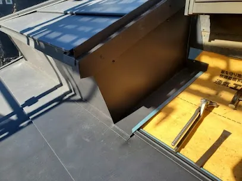

他の屋根材にはない板金ならではの特徴は折り曲げることが可能ということです。
他の屋根材の役物に使われている理由も、形状的に屋根材と同質で製造できない為です。
そして板金は外壁にも使用されています。屋根工事の際に雨を受けやすかったり、すでに損傷が激しかったりする外壁部をカバーする事も可能です。
最上階以外での雨漏りは、壁から発生しているケースが多くあります。
屋根工事のついでに、壁のリスクも減らしておきましょう。
サイディングや外壁塗装のご相談も大沼商会まで！！
OONUMA SHOKAI JOURNAL

他の屋根材にはない板金ならではの特徴は折り曲げることが可能ということです。
他の屋根材の役物に使われている理由も、形状的に屋根材と同質で製造できない為です。
そして板金は外壁にも使用されています。屋根工事の際に雨を受けやすかったり、すでに損傷が激しかったりする外壁部をカバーする事も可能です。
最上階以外での雨漏りは、壁から発生しているケースが多くあります。
屋根工事のついでに、壁のリスクも減らしておきましょう。
サイディングや外壁塗装のご相談も大沼商会まで！！
2025年02月03日公開の記事です。内容は掲載当時のものです。